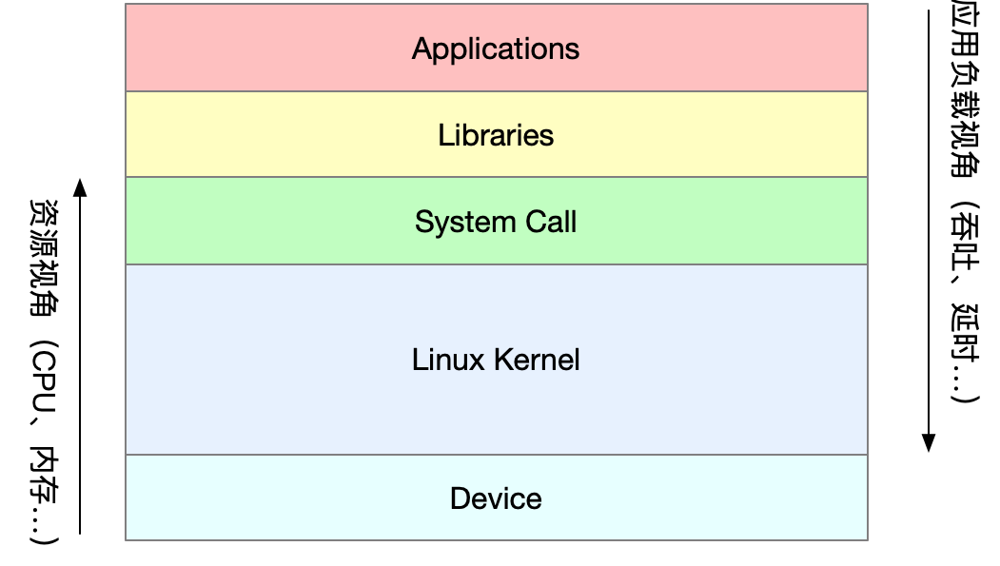
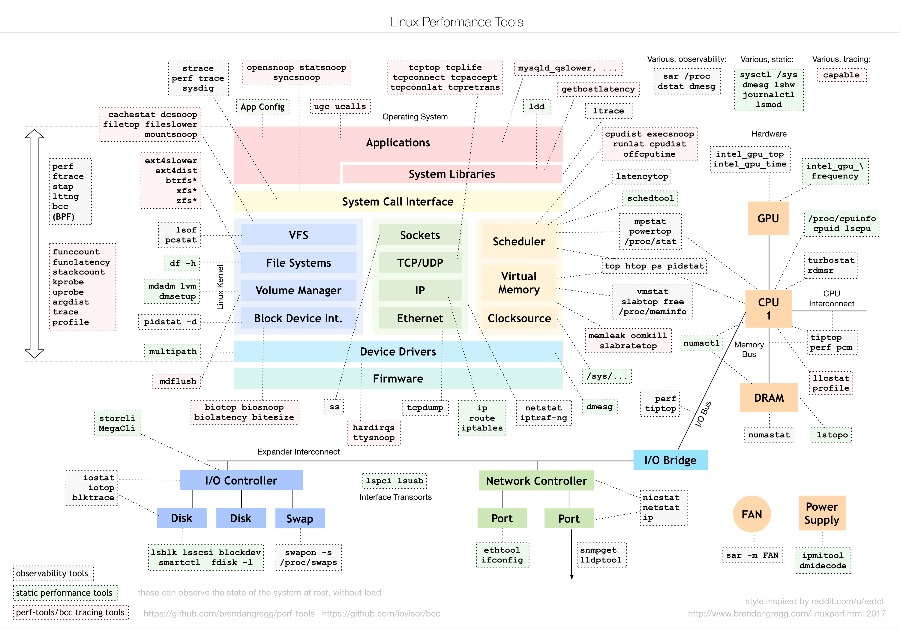

- 00 开篇词 别再让Linux性能问题成为你的绊脚石.md.html
- 01 如何学习Linux性能优化？.md.html
- 02 基础篇：到底应该怎么理解“平均负载”？.md.html
- 03 基础篇：经常说的 CPU 上下文切换是什么意思？（上）.md.html
- 04 基础篇：经常说的 CPU 上下文切换是什么意思？（下）.md.html
- 05 基础篇：某个应用的CPU使用率居然达到100%，我该怎么办？.md.html
- 06 案例篇：系统的 CPU 使用率很高，但为啥却找不到高 CPU 的应用？.md.html
- 07 案例篇：系统中出现大量不可中断进程和僵尸进程怎么办？（上）.md.html
- 08 案例篇：系统中出现大量不可中断进程和僵尸进程怎么办？（下）.md.html
- 09 基础篇：怎么理解Linux软中断？.md.html
- 10 案例篇：系统的软中断CPU使用率升高，我该怎么办？.md.html
- 11 套路篇：如何迅速分析出系统CPU的瓶颈在哪里？.md.html
- 12 套路篇：CPU 性能优化的几个思路.md.html
- 13 答疑（一）：无法模拟出 RES 中断的问题，怎么办？.md.html
- 14 答疑（二）：如何用perf工具分析Java程序？.md.html
- 15 基础篇：Linux内存是怎么工作的？.md.html
- 16 基础篇：怎么理解内存中的Buffer和Cache？.md.html
- 17 案例篇：如何利用系统缓存优化程序的运行效率？.md.html
- 18 案例篇：内存泄漏了，我该如何定位和处理？.md.html
- 19 案例篇：为什么系统的Swap变高了（上）.md.html
- 20 案例篇：为什么系统的Swap变高了？（下）.md.html
- 21 套路篇：如何“快准狠”找到系统内存的问题？.md.html
- 22 答疑（三）：文件系统与磁盘的区别是什么？.md.html
- 23 基础篇：Linux 文件系统是怎么工作的？.md.html
- 24 基础篇：Linux 磁盘I_O是怎么工作的（上）.md.html
- 25 基础篇：Linux 磁盘I_O是怎么工作的（下）.md.html
- 26 案例篇：如何找出狂打日志的“内鬼”？.md.html
- 27 案例篇：为什么我的磁盘I_O延迟很高？.md.html
- 28 案例篇：一个SQL查询要15秒，这是怎么回事？.md.html
- 29 案例篇：Redis响应严重延迟，如何解决？.md.html
- 30 套路篇：如何迅速分析出系统I_O的瓶颈在哪里？.md.html
- 31 套路篇：磁盘 I_O 性能优化的几个思路.md.html
- 32 答疑（四）：阻塞、非阻塞 I_O 与同步、异步 I_O 的区别和联系.md.html
- 33 关于 Linux 网络，你必须知道这些（上）.md.html
- 34 关于 Linux 网络，你必须知道这些（下）.md.html
- 35 基础篇：C10K 和 C1000K 回顾.md.html
- 36 套路篇：怎么评估系统的网络性能？.md.html
- 37 案例篇：DNS 解析时快时慢，我该怎么办？.md.html
- 38 案例篇：怎么使用 tcpdump 和 Wireshark 分析网络流量？.md.html
- 39 案例篇：怎么缓解 DDoS 攻击带来的性能下降问题？.md.html
- 40 案例篇：网络请求延迟变大了，我该怎么办？.md.html
- 41 案例篇：如何优化 NAT 性能？（上）.md.html
- 42 案例篇：如何优化 NAT 性能？（下）.md.html
- 43 套路篇：网络性能优化的几个思路（上）.md.html
- 44 套路篇：网络性能优化的几个思路（下）.md.html
- 45 答疑（五）：网络收发过程中，缓冲区位置在哪里？.md.html
- 46 案例篇：为什么应用容器化后，启动慢了很多？.md.html
- 47 案例篇：服务器总是时不时丢包，我该怎么办？（上）.md.html
- 48 案例篇：服务器总是时不时丢包，我该怎么办？（下）.md.html
- 49 案例篇：内核线程 CPU 利用率太高，我该怎么办？.md.html
- 50 案例篇：动态追踪怎么用？（上）.md.html
- 51 案例篇：动态追踪怎么用？（下）.md.html
- 52 案例篇：服务吞吐量下降很厉害，怎么分析？.md.html
- 53 套路篇：系统监控的综合思路.md.html
- 54 套路篇：应用监控的一般思路.md.html
- 55 套路篇：分析性能问题的一般步骤.md.html
- 56 套路篇：优化性能问题的一般方法.md.html
- 57 套路篇：Linux 性能工具速查.md.html
- 58 答疑（六）：容器冷启动如何性能分析？.md.html
- 加餐（一） 书单推荐：性能优化和Linux 系统原理.md.html
- 加餐（二） 书单推荐：网络原理和 Linux 内核实现.md.html
- 用户故事 “半路出家 ”，也要顺利拿下性能优化！.md.html
- 用户故事 运维和开发工程师们怎么说？.md.html
- 结束语 愿你攻克性能难关.md.html
- 捐赠
01 如何学习Linux性能优化？
你好，我是倪朋飞。
你是否也曾跟我一样，看了很多书、学了很多Linux性能工具，但在面对Linux性能问题时，还是束手无策？实际上，性能分析和优化始终是大多数软件工程师的一个痛点。但是，面对难题，我们真的就无解了吗？
固然，性能问题的复杂性增加了学习难度，但这并不能成为我们进阶路上的“拦路虎”。在我看来，大多数人对性能问题“投降”，原因可能只有两个。
一个是你没找到有效的方法学原理，一听到“系统”、“底层”这些词就发怵，觉得东西太难，自己一定学不会，自然也就无法深入学下去，从而不能建立起性能的全局观。
再一个就是，你看到性能问题的根源太复杂，既不懂怎么去分析，也不能抽丝剥茧找到瓶颈。
你可能会想，反正程序出了问题，上网查就是了，用别人的方法，囫囵吞枣地多试几次，有可能就解决了。于是，你懒得深究这些方法为啥有效，更不知道为什么，很多方法在别人的环境有效，到你这儿就不行了。
所以，相同的错误重复在犯，相同的状况也是重复出现。
其实，性能问题并没有你想像得那么难，只要你理解了应用程序和系统的少数几个基本原理，再进行大量的实战练习，建立起整体性能的全局观，大多数性能问题的优化就会水到渠成。
我见过很多工程师，在分析应用程序所使用的第三方组件的性能时，并不熟悉这些组件所用的编程语言，却依然可以分析出线上问题的根源，并能通过一些方法进行优化，比如修改应用程序对它们的调用逻辑，或者调整组件的配置选项等。
还是那句话，你不需要了解每个组件的所有实现细节，只要能理解它们最基本的工作原理和协作方式，你也可以做到。
性能指标是什么？
学习性能优化的第一步，一定是了解“性能指标”这个概念。
当看到性能指标时，你会首先想到什么呢？我相信“高并发”和“响应快”一定是最先出现在你脑海里的两个词，而它们也正对应着性能优化的两个核心指标——“吞吐”和“延时”。这两个指标是从应用负载的视角来考察性能，直接影响了产品终端的用户体验。跟它们对应的，是从系统资源的视角出发的指标，比如资源使用率、饱和度等。

我们知道，随着应用负载的增加，系统资源的使用也会升高，甚至达到极限。而性能问题的本质，就是系统资源已经达到瓶颈，但请求的处理却还不够快，无法支撑更多的请求。
性能分析，其实就是找出应用或系统的瓶颈，并设法去避免或者缓解它们，从而更高效地利用系统资源处理更多的请求。这包含了一系列的步骤，比如下面这六个步骤。
选择指标评估应用程序和系统的性能；
为应用程序和系统设置性能目标；
进行性能基准测试；
性能分析定位瓶颈；
优化系统和应用程序；
性能监控和告警。
了解了这些性能相关的基本指标和核心步骤后，该怎么学呢？接下来，我来说说要学好Linux 性能优化的几个重要问题。
学这个专栏需要什么基础
首先你要明白，我们这个专栏的核心是性能的分析和优化，而不是最基本的Linux操作系统的使用方法。
因而，我希望你最好用过Ubuntu或其他Linux操作系统，然后要具备一些编程基础，比如：
了解Linux常用命令的使用方法；
知道怎么安装和管理软件包；
知道怎么通过编程语言开发应用程序等。
这样，在我讲性能时，你就更容易理解性能背后的原理，特别是在结合专栏里的案例实践后，对性能分析能有更直观的体会。
这个专栏不会像教科书那样，详细教你操作系统、算法原理、网络协议乃至各种编程语言的全部细节，但一些重要的系统原理还是必不可少的。我还会用实际案例一步步教你，贯穿从应用程序到操作系统的各个组件。
学习的重点是什么？
想要学习好性能分析和优化，建立整体系统性能的全局观是最核心的话题。因而，
理解最基本的几个系统知识原理；
掌握必要的性能工具；
通过实际的场景演练，贯穿不同的组件。
这三点，就是我们学习的重中之重。我会在专栏的每篇文章中，针对不同场景，把这三个方面给你讲清楚，你也一定要花时间和心思来消化它们。
其实说到性能工具，就不得不提性能领域的大师布伦丹·格雷格（Brendan Gregg）。他不仅是动态追踪工具DTrace的作者，还开发了许许多多的性能工具。我相信你一定见过他所描绘的Linux性能工具图谱：

（图片来自brendangregg.com）
这个图是Linux性能分析最重要的参考资料之一，它告诉你，在Linux不同子系统出现性能问题后，应该用什么样的工具来观测和分析。
比如，当遇到I/O性能问题时，可以参考图片最下方的I/O子系统，使用iostat、iotop、blktrace等工具分析磁盘I/O的瓶颈。你可以把这个图保存下来，在需要的时候参考查询。
另外，我还要特别强调一点，就是性能工具的选用。有句话是这么说的，一个正确的选择胜过千百次的努力。虽然夸张了些，但是选用合适的性能工具，确实可以大大简化整个性能优化过程。在什么场景选用什么样的工具、以及怎么学会选择合适工具，都是我想教给你的东西。
但是切记，千万不要把性能工具当成学习的全部。工具只是解决问题的手段，关键在于你的用法。只有真正理解了它们背后的原理，并且结合具体场景，融会贯通系统的不同组件，你才能真正掌握它们。
最后，为了让你对性能有个全面的认识，我画了一张思维导图，里面涵盖了大部分性能分析和优化都会包含的知识，专栏中也基本都会讲到。你可以保存或者打印下来，每学会一部分就标记出来，记录并把握自己的学习进度。

怎么学更高效？
前面我给你讲了Linux性能优化的学习重点，接下来我再跟你分享一下，我的几个学习技巧。掌握这些技巧，可以让你学得更轻松。
技巧一：虽然系统的原理很重要，但在刚开始一定不要试图抓住所有的实现细节。
深陷到系统实现的内部，可能会让你丢掉学习的重点，而且繁杂的实现逻辑，很可能会打退你学习的积极性。所以，我个人观点是一定要适度。
你可以先学会我给你讲的这些系统工作原理，但不要去深究Linux内核是如何做到的，而是要把你的重点放到如何观察和运用这些原理上，比如：
有哪些指标可以衡量性能？
使用什么样的性能工具来观察指标？
导致这些指标变化的因素等。
技巧二：边学边实践，通过大量的案例演习掌握Linux性能的分析和优化。
只有通过在机器上练习，把我讲的知识和案例自己过一遍，这些东西才能转化成你的。我精心设计这些案例，正是为了让你有更好的学习理解和操作体验。
所以我强烈推荐你去实际运行、分析这些案例，或者用学到的知识去分析你自己的系统，这样你会有更直观的感受，获得更好的学习效果。
技巧三：勤思考，多反思，善总结，多问为什么。
想真正学懂一门知识，最好的方法就是问问题。当你能提出好的问题时，就说明你已经深入了解了它。
你可以随时在留言区给我留言，写下自己的疑问、思考和总结，和我还有其他的学习者一起讨论切磋。你也可以写下自己经历过的性能问题，记录你的分析步骤和优化思路，我们一起互动探讨。
学习之前，你的准备
作为一个包含大量案例实践的课程，我会在每篇文章中，使用一到两台Ubuntu 18.04虚拟机，作为案例运行和分析的环境。如果你只是单纯听音频的讲解，却从不动手实践，学习的效果一定会大打折扣。
所以，你是不是可以准备好一台Linux机器，用于课程案例的实践呢？任意的虚拟机或物理机都可以，并不局限于Ubuntu系统。
思考
今天的内容是我们后续学习的热身准备。从下篇文章开始，我们就要正式进入Linux性能分析和优化了。所以，我想请你来聊一聊，你之前在解决Linux性能问题时，有遇到过什么样的困难或者疑惑吗？或者是之前自己学习Linux性能优化时，有哪些问题吗？参考我今天所讲的内容，你又打算怎么来学这个专栏？
欢迎在留言区和我分享。

© 2019 - 2023 Liangliang Lee. Powered by gin and hexo-theme-book.